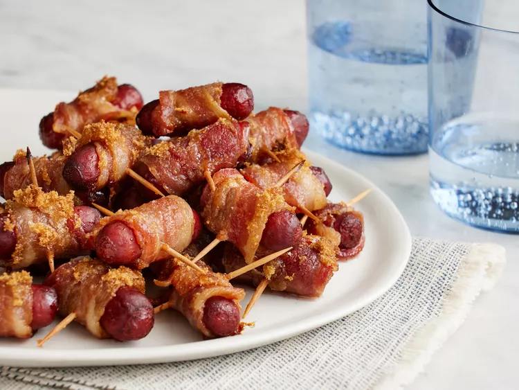

Bacon Recipe

Description
These sweet and salty bacon-wrapped smokies are a quick and easy party appetizer. Serve them straight from the oven or keep them warm in a slow cooker until the big game starts. Assembling these smoky bacon wraps may take some time, but it's well worth it!
Bacon-wrapped smokies will liven up any party, from big tailgates to cozy family get-togethers. This recipe for bacon-wrapped smokies couldn't be easier to make with just a few ingredients!
Ingredients
- Bacon:This bacon-wrapped smokies recipe starts with a pound of bacon strips, cut into thirds.
- Cocktail wieners: You'll need a package of beef cocktail wieners, which can be found in the refrigerator section of your grocery store.
- Toothpicks: A toothpick secures the bacon to the wieners so the smokies stay together during the baking process.
- Brown sugar:Brown sugar lends warmth and welcome sweetness.
Steps
- Gather all ingredients.
- Preheat the oven to 325 degrees F (165 degrees C). Line a large, rimmed baking sheet with parchment paper or aluminum foil.
- Wrap each cocktail wiener with a piece of bacon; secure with a toothpick. Place bacon-wrapped wieners on the prepared baking sheet.
- Evenly sprinkle brown sugar over the tops of the bacon-wrapped wieners.
- Bake in the preheated oven until bacon is crisp and sugar is bubbly, about 40 minutes.
- Serve immediately, or place in a slow cooker set on Low to keep warm.